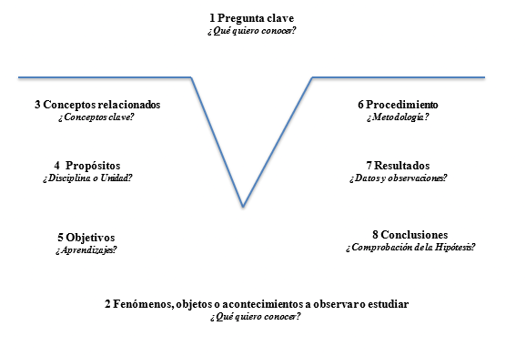

Actividad extraclase
10. CONSTRUCCIÓN DE UNA V DE GOWIN
- Para terminar con el tema debes elaborar una V de Gowin de las actividades desarrolladas.

10. CONSTRUCCIÓN DE UNA V DE GOWIN

11. GLOSARIO
§ Absorción: Proceso mediante el cual un material o sustancia retiene en su interior moléculas de otro material, como los solventes orgánicos que absorben compuestos vegetales.
§ Aceite esencial: Mezcla concentrada de compuestos aromáticos volátiles obtenidos de plantas mediante destilación o extracción; se usa por sus propiedades terapéuticas, cosméticas y antimicrobianas.
§ Ácido carnósico: Compuesto fenólico presente en el romero con propiedades antioxidantes y antimicrobianas; sensible a la luz y a altas temperaturas.
§ Agar: Sustancia gelatinosa derivada de algas marinas utilizada como medio sólido para cultivar microorganismos en laboratorio.
§ Antimicrobiano: Sustancia que inhibe el crecimiento o destruye microorganismos como bacterias, hongos o virus.
§ Biodiversidad: Variedad de especies, genes y ecosistemas existentes en una región; su conservación es fundamental para la estabilidad del planeta y la investigación biotecnológica.
§ Bioseguridad: Conjunto de normas y medidas preventivas que garantizan la seguridad del personal y del medio ambiente durante el manejo de agentes biológicos o químicos.
§ Biotecnología verde: Rama de la biotecnología orientada al uso sostenible de recursos naturales, minimizando el impacto ambiental en la producción de materiales y energía.
§ Carnosol: Derivado del ácido carnósico, con potente acción antioxidante y efecto protector frente al estrés oxidativo celular.
§ Colerético: Sustancia que estimula la producción de bilis en el hígado, favoreciendo la digestión de grasas.
§ Colagogo: Sustancia o extracto vegetal que promueve la expulsión de bilis retenida en la vesícula biliar.
§ Composición química: Conjunto de moléculas o compuestos presentes en una sustancia; en plantas, incluye flavonoides, terpenos y ácidos fenólicos.
§ Destilación Soxhlet: Técnica utilizada para extraer compuestos activos de materiales vegetales mediante solventes y un proceso cíclico de evaporación y condensación.
§ Diurético: Sustancia que incrementa la producción y eliminación de orina, favoreciendo la depuración del organismo.
§ Emenagogo: Sustancia o extracto de planta que estimula el flujo sanguíneo en la zona pélvica y uterina.
§ Extracto vegetal: Preparación concentrada que contiene los compuestos activos de una planta, obtenida por extracción con solventes.
§ Fitocompuesto: Componente químico natural producido por las plantas que puede tener efectos medicinales o biológicos.
§ Flavonoide: Grupo de compuestos vegetales con propiedades antioxidantes, antiinflamatorias y antimicrobianas.
§ Glicerina: Alcohol trihidroxilado empleado en la elaboración de jabones y cosméticos; actúa como humectante y estabilizador.
§ Hipótesis: Suposición o explicación provisional que se plantea al inicio de una investigación y que puede ser comprobada mediante la experimentación.
§ Medio de cultivo: Mezcla de nutrientes utilizada para favorecer el crecimiento de microorganismos en laboratorio.
§ Método científico: Proceso sistemático que permite generar conocimiento a través de la observación, formulación de hipótesis, experimentación, análisis y conclusiones.
§ Molécula bioactiva: Compuesto químico de origen natural con efecto biológico o terapéutico sobre organismos vivos.
§ Oxidación: Reacción química en la que una sustancia pierde electrones, lo que puede alterar su estructura y función; en extractos vegetales puede disminuir su eficacia.
§ Peptidoglicano: Componente estructural de la pared celular de las bacterias; su grosor determina la clasificación Gram positiva o Gram negativa.
§ Polaridad: Propiedad de las moléculas que describe la distribución desigual de cargas eléctricas; influye en su solubilidad en diferentes solventes.
§ Química verde: Enfoque científico que busca reducir el uso y la generación de sustancias peligrosas durante los procesos químicos, promoviendo la sostenibilidad.
§ Reactivo: Sustancia química empleada para provocar o detectar una reacción en una práctica experimental.
§ Rosmarinus officinalis: Nombre científico del romero, planta aromática y medicinal rica en compuestos fenólicos y aceites esenciales.
§ Safranina: Colorante de contraste empleado en la tinción de Gram que tiñe de rojo a las bacterias Gram negativas.
§ Saponificación: Reacción química que ocurre al mezclar grasas o aceites con una base alcalina, generando jabón y glicerina.
§ Solvente: Sustancia líquida que disuelve a otra, formando una solución; su elección depende de la polaridad del compuesto que se desea extraer.
§ Sustentabilidad: Principio que busca satisfacer las necesidades actuales sin comprometer los recursos de las generaciones futuras, integrando dimensiones ecológicas, económicas y sociales.
§ Tinción de Gram: Técnica diferencial de coloración que permite clasificar bacterias según la composición de su pared celular.
§ Toxicidad: Grado en que una sustancia puede causar daño a un organismo vivo.
Obra publicada con Licencia Creative Commons Reconocimiento Compartir igual 4.0